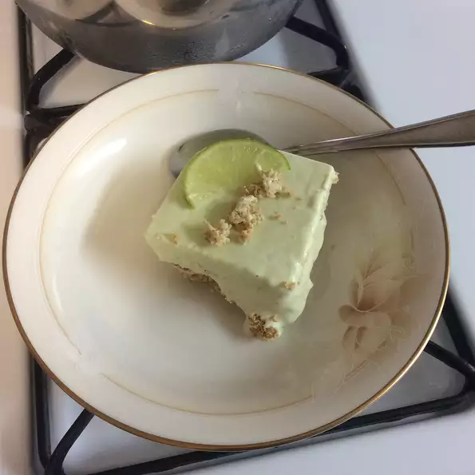

Return to recipes
Avocado Cheesecake Recipe

Cheesecake made with avocados and lime
This dessert is inspired my mexican food incorporating lime and avocados to make a Cheesecake. The green color may look funky but it the taste is delish. This dish does require you have access to an ice cream maker
Ingredients
- 1/2 cups heavy whipping cream
- 3/4 cups white sugar
- 1 & 1/2 ripe avocados, peeled and pitted
- 2 (3 ounce) packages cream cheese, softened
- 1/2 cup fresh lime juice
- 1 (8 inch) prepared graham cracker crust
Steps
- Heat cream in a small saucepan until small bubbles appear around edges. Remove from heat and stir sugar into cream until it dissolves. Transfer to a medium bowl and allow to cool.
- Combine avocado and cream cheese in a food processor and blend until smooth. Add lime juice and process until smooth; whisk into the cooled cream mixture.
- Fill an ice cream maker with the avocado mixture, and freeze according to the manufacturer's instructions for making ice cream.
- Spoon avocado mixture into the prepared pie crust; smooth surface with a spatula. Freeze until solid, at least 2 hours. Let cheesecake sit at room temperature until slightly softened yet firm enough to slice before serving, 10 to 15 minutes.